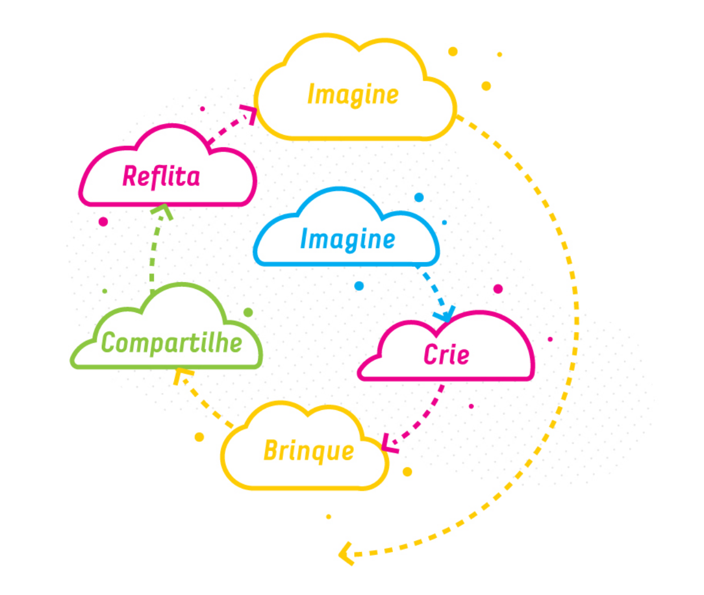

ABNCC define o conjunto de assuntos, competências e habilidades que devem ser trabalhados durante a fase escolar.Contudo, o documento não determina como as instituições de ensino básico devem promover esses aprendizados. As escolas possuem liberdade para escolher a estratégia pedagógica que vão utilizar, ou seja, como os conteúdos, competências e habilidades serão trabalhados no dia a dia dos estudantes.
Algum paragrafo
Algum paragrafo
Algumparagrafo
